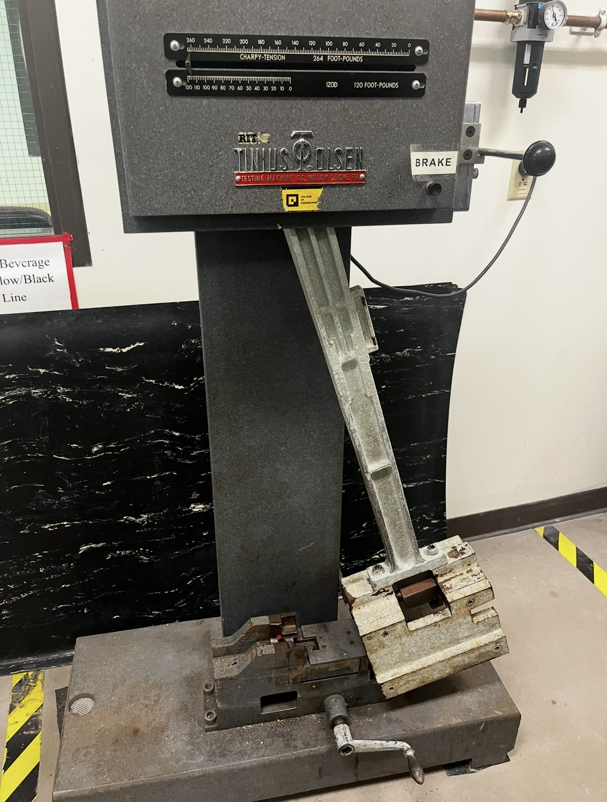
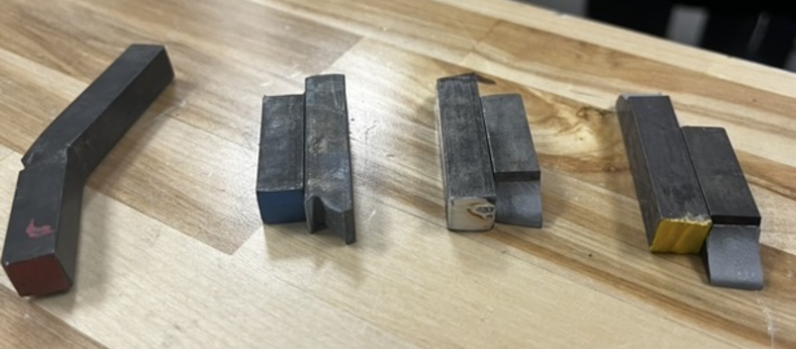

Materials & Tensile Testing
A semester of heat-treating and testing 1080 steel, changing how the metal behaves and then proving the change with hardness and impact tests



What I did
I ran 1080 steel through a full set of heat treatment and testing procedures: quenching, tempering, a Jominy end-quench test, and welding. Each one changes the steel's hardness and toughness differently, and what mattered to me was doing them right and then actually checking the result instead of taking it on faith.
How I tested it
I tested the treated samples for hardness and impact toughness, including Charpy and Izod impact tests on a Tinius Olsen machine. The fractured specimens tell the story: how the steel broke, and how brittle or tough each one was after its treatment. I documented every procedure and result so the data was traceable.
What I took from it
This is where heat treatment stopped being something I read about and became something I had actually done. I left genuinely comfortable working in a materials lab, and I trust a result a lot more when I have measured it myself.
← All projects